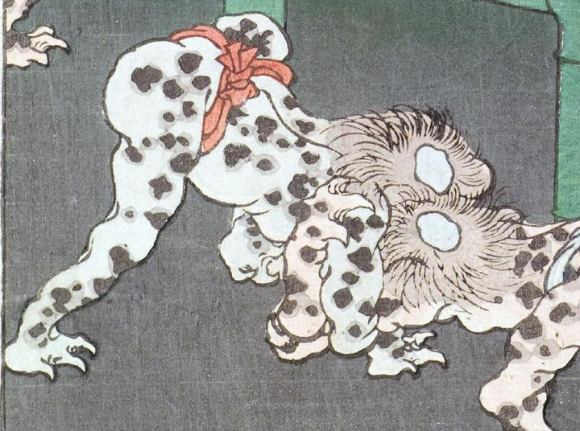

河童。もう1体の河童と相撲をとっている。頭頂の真ん中が禿げて、皿のようになっている。全身は薄青く、黒い斑が入っており、赤色の褌を締めている。手足の指は3本で爪が鋭い。
著作者：一魁齋芳年（月岡芳年）／出典：親書誌：U426_nichibunken_0136：白藤源太；シラフジゲンタ／日付：2009／資源識別子：U426_nichibunken_0136_0001_0002
Copyright (c)2010- International Research Center for Japanese Studies, Kyoto, Japan. All rights reserved.